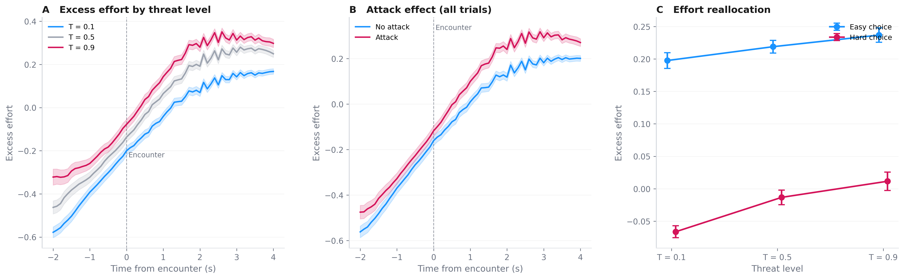
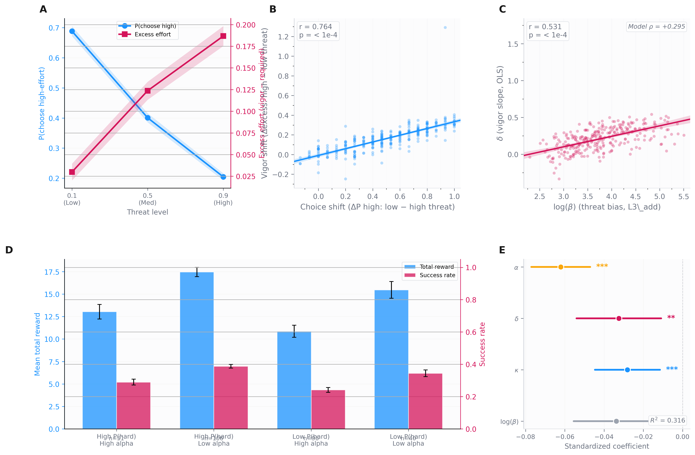
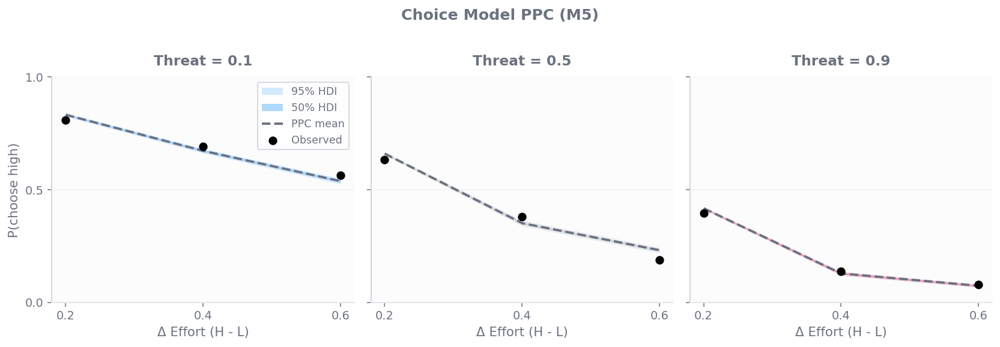

Humans Reallocate Effort Across
Decision and Action When
Foraging Under Threat
Noah Okada, Ketika Garg, Toby Wise, Dean Mobbs
Exploratory sample: N = 293 | Confirmatory sample: N = 350 (collected, not analyzed)
The Question
Two literatures that haven't talked to each other
Effort literature
- Studies choice — which option to select
- Effort discounting, parabolic/hyperbolic costs
- Threat → avoidance, freezing, withdrawal
Threat literature
- Studies defensive action — how to respond
- Threat imminence continuum
- Flight, freeze, fight responses
In ecological foraging, choice and action are inseparable.
The decision to pursue distant food commits the forager to sustained effort
in a threat-exposed environment.
Prediction: If humans optimize their foraging policy,
choice and vigor should adjust coherently —
choose safer targets while pressing harder on them.
Result 1: A Survival-Weighted Value Model Governs Choice
H1 — 5 models compared, each testing one structural question
SV = R · S − k · E − β · (1 − S)
S = (1−T) + T / (1 + λD)
- Additive effort beats multiplicative: ΔELBO = +158
- Hyperbolic beats exponential survival: ΔELBO = +174
- Survival model beats effort-only: ΔELBO = +2,038
- Accuracy: 76.1%, AUC: 0.863
- k and β weakly correlated (r = −0.14) — distinct dimensions
Effort is a flat physical cost, not a reward discount.
S separates attack probability from escape probability.
| Model | Structure | ΔELBO |
|---|
| M1 | Effort only | −2,038 |
| M2 | Feature-based (T×D) | −521 |
| M3 | Multiplicative × exponential | −174 |
| M4 | Multiplicative × hyperbolic | −158 |
| M5 | Additive × hyperbolic | Winner |
Key parameters:
| Param | Meaning | Value |
|---|
| k | Effort sensitivity | M = 6.2, SD = 6.8 |
| β | Threat bias | M = 81.8, SD = 81.7 |
| λ | Hazard scaling (fixed) | 14.0 |
| τ | Inverse temperature | 0.76 |
Result 2: Danger Drives Excess Motor Vigor
H3 — The same S that governs choice also drives motor effort beyond task demands
- Population δ = +0.211 (MCMC validated)
- 98.3% of participants show positive δ
- Safest → most dangerous: excess effort shifts by ~20% of motor capacity
- Survives within constant-demand trials (ruling out demand confound)
- Threat × distance interaction mirrors S structure
- Split-half reliability: SB ρ = 0.451
S also predicts affect
- S → anxiety: z = −24.1, p < .001
- S → confidence: z = +23.7, p < .001
- Cross-domain: choice shift × anxiety shift r = −0.39

A: Excess effort by threat level (encounter-aligned).
B: Attack effect at T=0.9.
C: The reallocation pattern — easy-choice vigor rises while hard-choice vigor falls.
Result 3: Coordinated Effort Reallocation
H5 — Choice and vigor are coupled through a shared survival computation
As threat increases, people choose safer targets while
pressing harder on them — a coordinated strategy shift,
not two independent responses.
Evidence pyramid
| Level | Statistic | Robust to λ? |
|---|
| Behavioral | r = −0.67 | Yes |
| MCMC point est. | r = +0.53 | Yes |
| Posterior bootstrap | r = +0.32 [0.23, 0.40] | Yes |
- β × δ: +0.32 [0.23, 0.40] — threat aversion → vigor mobilization
- k × δ: −0.25 [−0.32, −0.18] — effort avoidance → less vigor
- α × δ: r = −0.01, n.s. — tonic and phasic are independent
- Predicts earnings: R² = 0.321, all 4 params contribute

A: Dual-axis threat response. B: Choice-vigor shift coupling.
C: β vs δ from independent models. D: Strategy quadrants.
E: Regression forest plot.
Result 4: Vigor Mobilization Tracks Affective Accuracy
H6 — People who press harder under danger also have better calibrated feelings
- δ × anxiety-S slope: r = −0.31, p < .001
- δ × confidence-S slope: r = +0.33, p < .001
- β shows same pattern (|r| > 0.28)
- k predicts calibration in expected direction (r = +0.20)
- α does NOT predict calibration
"Adaptive, not anxious"
Higher δ is associated with lower mean anxiety (r = −0.19).
High-δ people are not chronically anxious — their anxiety is
better calibrated: steep when danger is real, low when it isn't.
This tonic-phasic dissociation in affect mirrors the α-δ structure in the motor domain.

A-B: Anxiety/confidence by survival level.
C-D: δ predicts calibration slopes.
E: Parameter-calibration correlations.
F: "Adaptive, not anxious."
Supplementary: Mental Health — A Performance Phenotype
Bayesian regressions with ROPE equivalence testing
The one bridge: α → Apathy
- α → F3 (Apathy): R² = 0.12, t = −6.11, p < .001
- Driven by AMI Social subscale (r = +0.18)
- Consistent with dopaminergic effort literature
Everything else: null ROPE confirmed
- δ → all 3 factors: all p > 0.19
- β × δ coupling → all factors: all p > 0.60
- Calibration → all factors: all p_fdr > 0.27
- STAI-Trait × strategy quadrant: χ² = 4.25, p = 0.64
- Depressed (PHQ≥10) show same coupling as controls
The reallocation system predicts foraging performance,
not psychopathology. The threat-responsive optimization is orthogonal
to clinical dimensions in this sample.

A: Factor loadings. B: Bayesian forest plot.
C: Per-scale heatmap. D: α → Apathy posterior.
E: ROPE equivalence testing.
Model Validation
MCMC convergence, PPCs, and parameter recovery
MCMC Validation
- Choice model: Rhat = 1.00, ESS > 9,000, 0 divergences
- Vigor model: Rhat = 1.00, ESS > 15,000, 0 divergences
- SVI vs MCMC agreement: k r=0.997, α r=0.998, δ r=0.998
- λ fixed at 14.0 (weakly identified from 3 distance levels)
Parameter Recovery
- k: r = 0.86 (excellent)
- α: r = 0.94 (excellent)
- δ: r = 0.67 (good)
- β: r = 0.40 (limited by 45 trials)
- Cross-domain: true ρ=0.55 → recovered 0.20 (60% attenuation)
- → Observed r = 0.53 underestimates true coupling

Choice PPC (9 conditions within HDI), calibration, and vigor PPC by threat level.

Parameter recovery and cross-domain correlation attenuation.
Preregistered Hypotheses (H1–H6)
Confirmatory sample: N = 350, collected, not analyzed
| H | Hypothesis | Primary test | Exploratory result |
|---|
| H1 |
Additive effort + hyperbolic survival wins |
ΔELBO > 0 (M5 vs M4, M3) |
+158, +174 |
| H2 |
S predicts trial-level anxiety and confidence |
β(S) with |t| > 3.0 |
z = −24, +24 |
| H3 |
Danger drives excess vigor (μ_δ > 0) |
95% CI excludes zero; >80% δ > 0 |
μ_δ = +0.21, 98% |
| H4 |
Choice-vigor coupling under threat |
Shift anti-correlation; vigor predicts escape |
r = −0.67; β = +0.87 |
| H5 |
β and δ covary across independent models |
r(log(β), δ) > 0, p < .001 |
r = +0.53, bootstrap +0.32 |
| H6 |
δ predicts affect calibration to S |
r(δ, anxiety slope) < 0, p < .05 |
r = −0.31 |
All six hypotheses are directionally confirmed in the exploratory sample.
The confirmatory sample (N = 350) will test them with pre-registered thresholds
on AsPredicted before data are opened.
Effort Under Threat Is Not Avoidance —
It's Coordinated Reallocation
A single survival computation S integrating attack probability
with escape distance governs:
|
🎯
Choice
What to pursue
k, β
|
😰
Affect
How it feels
calibration
|
💪
Vigor
How hard to try
α, δ
|
The coupling across these channels is what makes foraging adaptive —
and it's a performance phenotype, not a clinical one.